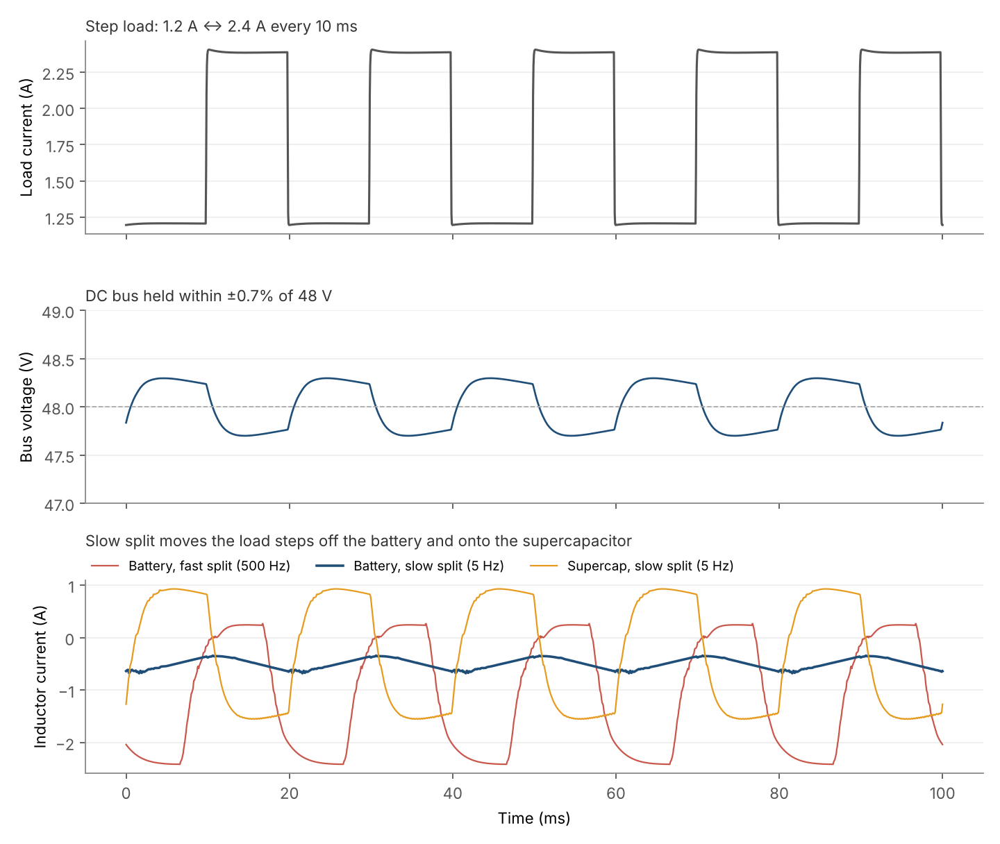
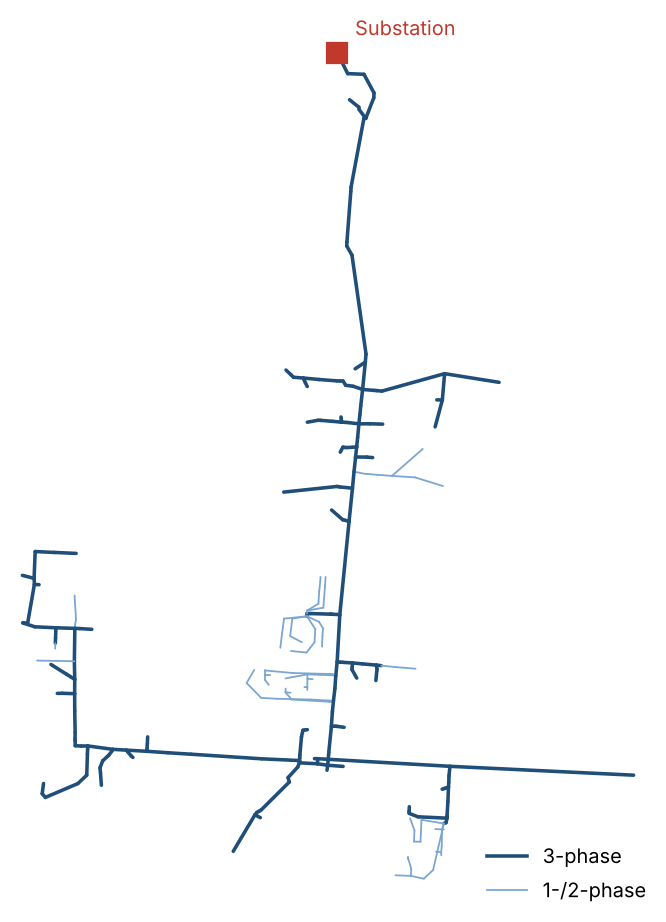

Hybrid-Storage DC Microgrid Testbed
7x24 Exchange University Challenge · Bronx, NY · Team lead
AI clusters swing their power draw hard and fast, and batteries degrade when they're made to follow every swing. This testbed is a bench-scale 48 V DC bus that pairs a battery with a supercapacitor: the supercapacitor takes the fast transients and the battery supplies the slow, steady part of the load. Cooling sits on the same bus as a controllable load. The end goal is a hardware-in-the-loop bench with a TI C2000 supervisory controller as the device under test.
What I did
- Modeled the converter in Typhoon HIL and designed a two-loop controller: a fast current loop inside a slower voltage loop.
- Verified in simulation that the bus voltage holds steady through sudden load changes.
- Specified the supervisory strategy from a literature survey of hybrid energy storage systems. The published architecture I started from omits state-of-charge feedback, which would eventually drain the supercapacitor. I'm adding SOC recovery and load feedforward to cut peak battery current and dI/dt.
- Leading the chapter team building the controller.
Simulation result (Typhoon HIL)

Fault Localization and Classification in Power Distribution Systems
Jaspers Summer Research Scholars · Bronx, NY
Utilities need to know quickly where a fault happened and what kind it was. Rooftop solar and other distributed generation make that harder, because current can now flow both ways on a feeder, and smart-meter data arrives with gaps. This project uses simulated fault data from a real utility feeder model to train models that localize and classify faults.
Results
My part
- Ran short-circuit simulations (LL, LG, LLG, and three-phase faults) on the EPRI Ckt7 distribution feeder in OpenDSS.
- Engineered features from PMU and smart-meter data: symmetrical components and voltage/current magnitudes and angles.
- Modeled realistic grid conditions with varying distributed generation penetration and smart-meter dropout rates, to capture bidirectional current flow and sparse data.
- The machine learning pipeline (Random Forest and SVM classifiers, plus a distance regressor for fault location) was built with my research partner, Theodore Lodge, who led the ML side.

Mission Critical PDS Intern
Jones Lang LaSalle (JLL) · Yonkers, NY
- Produced an as-built electrical one-line diagram in AutoCAD for a 375 kW Con Edison data center, tracing power flow from two 4.16 kV utility feeds through switchgear, UPS, and PDU levels.
- Authored Methods of Procedure (MOPs) for electrical equipment repair and infrared scanning, adopted by technicians and engineers for field execution.
- Executed monthly generator load testing; logged and trended performance readings to verify backup-power readiness.
- Supported electrical, mechanical, and thermal operations, including chiller inspections and daily critical-facility rounds.
Leadership, Training, and Tools
Organized an NFPA 70E electrical safety training open to all mechanical and electrical engineering students; participants received a certificate of completion. Coordinating guest speakers, conferences, and networking events, and leading the University Challenge team.
Coordinating events, scholarship opportunities, and conferences for members.
Eta Kappa Nu Member, tutor 3 hrs/week
Tau Beta Pi Member